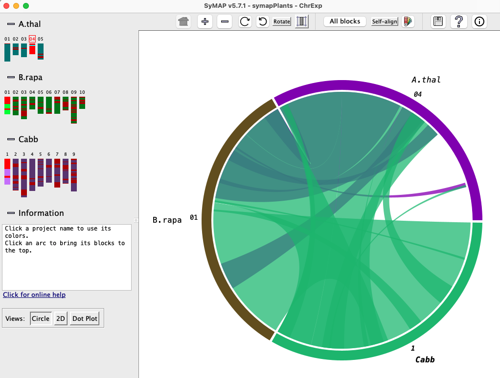
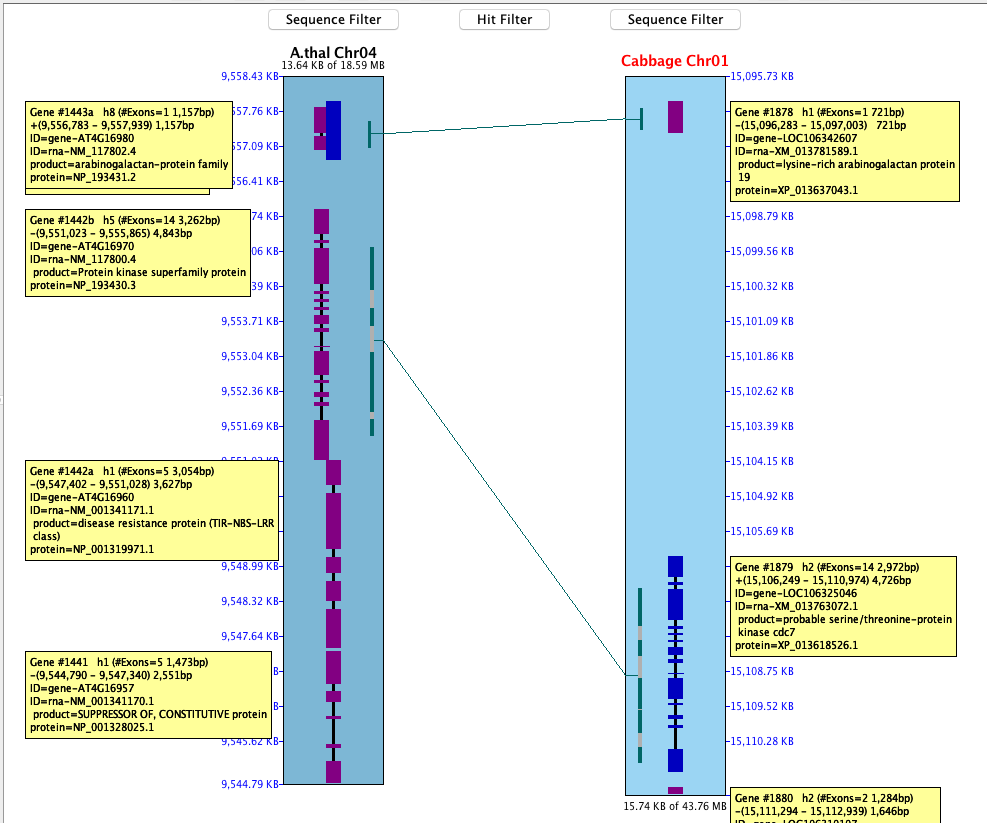

|
Following is a quick tour of the many displays and queries available through SyMAP.
Contents
Project Manager
After the synteny database has been build
(see System Guide), the synteny can be viewed
from the manager. All projects in the database will be listed on the left panel.
|
Selecting projects on the left panel shows them on the right panel. A check mark in the
Available Syntenies matrix indicates pairs that have computed synteny that can be viewed.
By selecting a cell with synteny,
the "Display for Selected Pair:" buttons are activated, which
display synteny views for the two-genome.
The "Display for All
Projects" provides multi-genome synteny views for all projects in the
matrix.
| 
|
The Chromosome Explorer provides multi-chromosome for multi-genome.
|
Multiple chromosomes can be selected
from different species on the left-hand panel.
The default display is the Circle view shown.
From here, one can select Dot Plot, 2D or 3D (if available).
For Circle,
Dot Plot and 3D,
multiple chromosomes can be selected and viewed (as shown below).
For 2D,
it is best to only have two or three chromosomes selected (as
shown below).
| 
|
The Circle view is available for two-genome and multi-chromosome.
The left
image shows all chromosomes for maize and rice.
The right image shows one maize chromosome (3),
two sorghum chromosomes (3, 8) and two rice chromosomes (1, 5).
The Dot Plot view is available for two-genome and multi-chromosome.
The left
image shows all chromosomes for maize and rice.
The right image shows one maize chromosome (3, reference),
two sorghum chromosomes (3, 8) and two rice chromosome (1, 5).
Synteny blocks are outlined in blue, and one can click to zoom further and
arrive at a more detailed 2D display.
The Block View is a two-genome view.
The synteny blocks are colored by chromosome (see color key at top).

|
Clicking a chromosome pops up a window of the chromosome as shown below. Clicking
a block pops up a 2D display.

|
| The 3D is a multi-chromosome view.
The 3D view is only available on systems that have the 3D
Java libraries installed.
|

|
2D 3-Chr
|
This is a three-chromosome view.
The dark blue down the center of the chromosomes are annotated genes.
The brown lines between chromosomes are hits, where only hits that are part
of a synteny block are shown here.
| 
|
|
This is a two-chromosome view.
The Maize Chr3 and Rice Chr1 were displayed, then zoomed into the top part (i.e.
the top 7.97 Mb from the above image). It was then
flipped (note that it is inverted in the above image), resulting the view on the right.
| 
|
|
Zooming in further and turning on the annotation results in the view on the
right.
| 
|
| It is possible to zoom in even further and see a basepair-level view
of the region, with Needleman-Wunsch alignments generated on the fly.
| 
|
SyMAP includes powerful search features to help make the most of synteny information.
Aligned regions across the selected species are automatically grouped into "putative gene
families". The filters allow you to locate the families of interest based on annotation,
level of synteny, and presence or absence in different lineages.

The query results table has full flexibility in column selection, column ordering,
and save/reload of searches. For example if you find an interesting family that is
not annotated, you can easily save all the relevant sequences as a fasta file for further study.

Putative gene families (PgeneF): The hits are grouped into gene families.
The PgeneF number is a unique number assigned to the gene family.
The PgFSize number is how many unique instances are in the family.
Another unique option is to send the selected sequences directly to Muscle for multiple
alignment, to reveal the patterns in the sequence alignments between the species.
SyMAP parses and displays the MUSCLE (Edgar 2004 NAR:32) results:

|


{kind=link}
{kind=link}